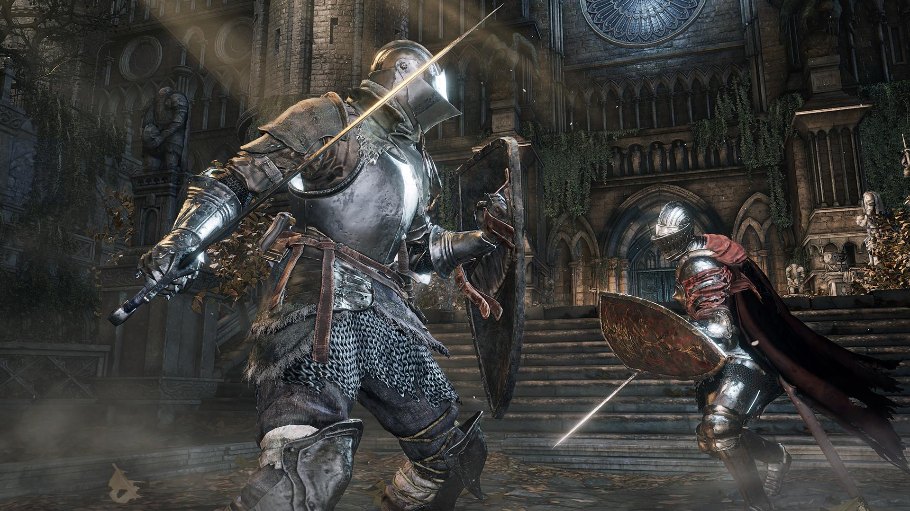

There's nothing quite like The Witcher 3, where one moment you can help put the soul of a noonwraith to rest and the next you can head to the Passiflora and engage in some heavy petting (that you paid for). A fantastic mix of tough (but fun) combat, brilliant writing, and truly difficult decisions, The Witcher 3 will sink its hooks into you faster than you can say, "Wind's howling." Geralt of Rivia is both reviled and required by the people of this mythical world, and the tension of being an outsider in an environment that's growing more prejudiced by the minute is palpable. But it's easy to keep busy: spend your time slaying monsters or seeking out rare armor tucked away hard-to reach areas - the choice is yours (but good luck choosing between your paramour options, Triss and Yennefer, as that decision gave me anxiety for 80 hours). And once you're done with the weighty and intense main story line, you can simply download The Blood and Wine and Hearts of Stone DLC for a few dozen more hours of hanging out with Geralt and Roach. Simply put, this is the best damn RPG you can play right now, so toss a coin to your witcher, you've got the time.
Dark Souls III

(Image credit: Peter Gondič)
Dark Souls III is an action role-playing game played in a third-person perspective, similar to previous games in the series. According to lead director and series creator Hidetaka Miyazaki, the game's gameplay design followed "closely from Dark Souls II". Players are equipped with various weapons to fight against enemies, such as bows, throwable projectiles, and swords. Shields can act as secondary weapons, but they are mainly used to deflect enemies' attacks and protect the player from suffering damage. Each weapon has two basic types of attack, one being a standard attack and the other being slightly more powerful that can be charged up, similar to FromSoftware's previous game, Bloodborne. In addition, attacks can be evaded through dodge-rolling. Bonfires, which serve as checkpoints, return from previous instalments. Ashes, according to Miyazaki, play an important role in the game. Magic is featured in the game, with a returning magic system from Demon's Souls, now known as "focus points" (FP). When performing spells, the player's focus points are consumed. There are two types of Estus Flasks in the game, which can be allotted to fit a players' particular play style. One refills hit points like previous games in the series, while the other refills focus points, a feature new to the game. Combat and movements were made faster and more fluid than Dark Souls II. Several player movements are performed more rapidly, allowing more damage to be done in a shorter period.
Nier Automata
(Image credit: Adam Hrušovsky)
Come for the soundtrack, stay for the silky smooth combat and pitch-perfect blend of genres. There's hack and slash, there's shoot 'em up, there's text adventures, there's RPG elements – Nier: Automata has it all, and in spades. The dazzling combat is split between three crazy sexy cool android protagonists who twirl and flip in hypnotic ways - and while its fun to hack and slash away at enemies with the quiet fury of a robot, the game really shines when you start customizing those robotic elements. Pick what chip is installed in your metal head and swap them in and out as needed, depending on the enemies you're facing - add that to one of four weapons in your arsenal and you'll have an ever-changing flurry of devastating combos at your disposal. The ending will linger with you long after and make you want to go back and get whatever extra info you can.
 Valhalla
RPG
Domov
Valhalla
RPG
Domov